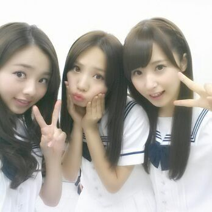
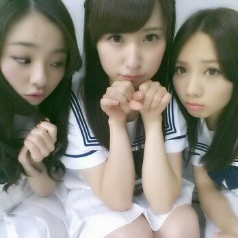
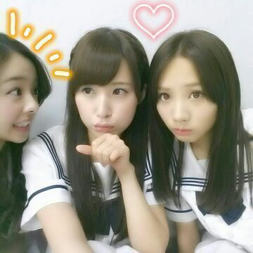

| 2013/07 07 Sun | 川村真洋 明日『コウモリよ』えりかポジ担 当です！！ 明日の握手会よろち くっすすす((／〃□〃)／ ろってぃ- |
はあい (^▽^)
Rotty☆だよ- ！
・・・・・
皆さん ))))
オリコン１位おめでとうコメント
ありがとうねん♪
そして 乃木坂大運動会のことも
やっぱ つっこまれたかーー(>▽<)笑
まひろさあ
障害物リレーの三輪車さあ
何であんな... 笑
見てくれたらワカリル。／
皆めっちゃ足ひらいて
頑張ってんのに、
我は
「姿勢良すぎだし らくしょうで
こぎ過ぎなんだよおっ！！」
「終わった後 何か言ってるけど
何言ってんのか分かんないんだよw笑」
まひろの後ろで
必死でこいでる あにあにが
うつってるんだよ(^▽^)/
ちょ-ど あにあにと
まひろん家で見てたから
二人で爆笑したわ(>▽<)/笑
あと、 れなりんと2人で
喋っているのもうつっとった〜
\( ´∀｀)／
またもや 、
まひろ あにあに みさの
スリーショット\(〃▽〃)/

まひろ、あにあにも みさも
大好きやねん(*^^*)


明日 急遽 えりかが
出れなくなったみたいで
この３人で明日のミニライブ
えりかのポジをすることになりました！
まひろ→コウモリよ
みさ→世界で一番 孤独なlover
あみ→ガールズルール
コモリ コドラバ ガールル v(^o^)
略してみた わら
コウモリよは ユニット四人ぬいて
1列目 の 皆から見て一番右ですね(^^)/
えりかfamの皆さん )))
えりかポジちゃんとやらせて
頂きますっ //
見ててくださいっ(〃ω〃)
よろしくお願いします ♪
し(^3^)/も返し／
☆Rotty何食べてんの？(ま-やとの写真)
★あれはねぇ〜パスタだよ！
まひろ、ま-や、みさ、
あみ、あすか、らりんで
ランチ行ったんよ^З^
☆握手会で
「いつもコメントしてる○○です」
って言ったら分かる？？
★うんっ 分かるよぉ〜(´ ▽ `)
ゆってね〜 //
☆てかデコってぃー復活してきた？
★してるさしてるさぁ〜^^
皆は 前髪ありかデコってぃー
どっちがいいですかあ？？
☆洋楽は好きですか？
★もちろん好きだよぉ〜！！
私はアメリカ人だからねっ 笑/
☆こんな自分に「大好き」「可愛い」
と言われて嬉しいですか？
嬉しいなら個別の時
言わせてもらいますo(^o^)o
★そりゃあ 大好きや可愛いは
何度言われても嬉しいし
ありがたいな。と思うよ ！
え？言ってくれるのー(〃▽〃)？
嬉しちい ありがと。
☆ろってぃ-は印象に残ってる
誕生日パーティーとかありますか？
★小さい頃はいつも
誕生日パーティーに行ったりしたり
してましたねぇ〜)))
あ〜 なんか楽しかったなぁ〜(；ω；。)
まひろん家はいつも
お母さんがプルーツポンチ
作ってくれたなぁ〜 ( *´ω`*)
☆恥ずかしいんだけど
人生で最初と最後の関西弁を
ろってぃ-の握手会の時使って
いいですか？
★使って使ってぇ〜
とゆぅか 最初で最後とか言わないでぇ〜
普段使うの恥ずかしかったら
まひろと握手する時だけでも
使ってさあー(*・З・)
☆ろってぃ-は
お母さん似？お父さん似？
★家族 全員 顔 ばらばらなんだよねぇぇ。
まず 姉と私が全く違うからね〜(*^^*)
☆生クリームのまま４時間待機は
きついね、全身パリパリだったでしょ？
★パリパリだし ベトベトだし
メンバーが洗面所に頭つっこんで
頭洗ってる姿は すごいなんか
なんとも言えなかった
☆クリームまみれの集合写真で
右下の全然汚れてないのは...だれ？
★せいたんだよ(>▽<)
せいらティッシュでふいてんやん /
ぢゃあねん、thank-you☆
明日は プリンしパル以来
初めて皆さんに会えるから
とっても楽しみにしてるよん( 〃▽〃)
握手会よろしくねぇ〜ん ♪
大好き...
以上っ ろってぃ-でした /